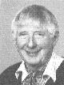
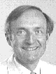
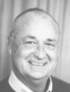
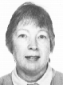

INFORMATION about PREVIOUS B.C.A. COUNCIL MEMBERS
Information about previous BCA Council members
These people do not have information in their own file.
They are listed chronologically in the file by first year of office;
or can be accessed by name:
Prof John
Helliwell Vice President 1989-3
web site:
http://spec.ch.man.ac.uk/~hell/hm.html
Brief Biography from the IUCr publication
'Crystallography Across the Sciences'
Awarded the 'Professor K Banerjee Endowment Lecture Silver Medal' in 2000
CLRC Director for Synchrotron Radiation
2001 - 2002
Election address,
when standing for BCA President 2003
Prof Bruce
Forsyth Vice President 1993-7
 Prof Paul Barnes
ex-officio - Exhibition Co-ordinator 1994 - 2000
Prof Paul Barnes
ex-officio - Exhibition Co-ordinator 1994 - 2000
Dr Moreton
Moore Secretary 1995 - 7
Newsletter Editor issue no 1. 1981 - no. 20 1097

Derrick Hart Council member 1997 - 99
Dr Jo
Jutson Industrial Group representative 1997 - 99
Newsletter Editor March 2001 - 2002
 Dr Chick Wilson Council member 1997 - 2003
Dr Chick Wilson Council member 1997 - 2003
web site
http://www.isis.rl.ac.uk/Crystallography/wilson/
Physical Crystallography Group Representative 1999 - 2002
Winner of the
1996 Philips Physical
Crystallography Award
-
Winner of the first
BTM Willis Prize 2002
Author of
Book on neutron diffraction
Election address,
when standing for BCA President 2003
Prof Guy Orpen Council member 1998 - 2000
Chairman Chemical Crystallography Group 1999 -
web site
http://www.bris.ac.uk/Depts/Chemistry/staff/gorpen.html
Chemical Crystallography Group Representative 1996 - 2000
This file last updated 29 Dec 2000
BCA Home page WebMaster
BCA@ISISE.RL.AC.UK
 Click here to return to BCA homepage
Click here to return to BCA homepage